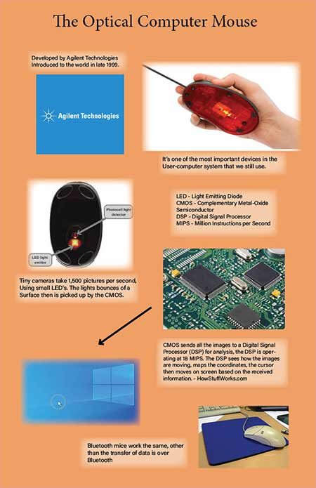

Patrick Shaw's AENG 110 Class Infographic Project |
|
| Home Print Project Info Graphic Project Video Project Photograph Project | |
|  |
For our AENG 110 Infographic project we were tasked with making an infographic about a topic we choose from in a list of communication technologies. I choose the Optical Computer mouse. For this project I researched the optical mouse and learned how it works and the crazy amount of information it can process in a small amount of time. |
| Home Print Project Info Graphic Project Video Project Photograph Project |
©2023 Patrick Shaw |